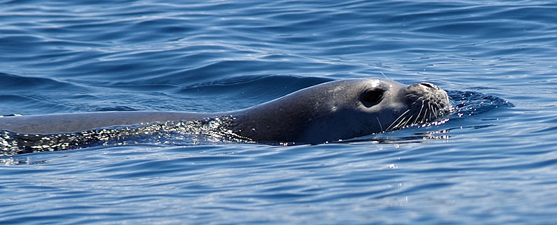
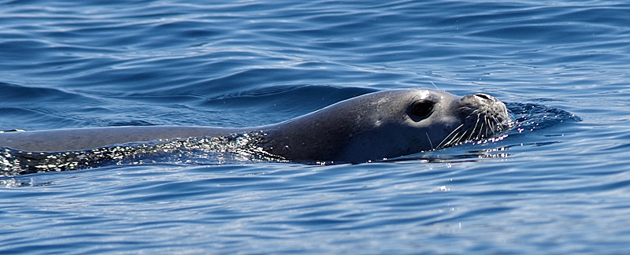
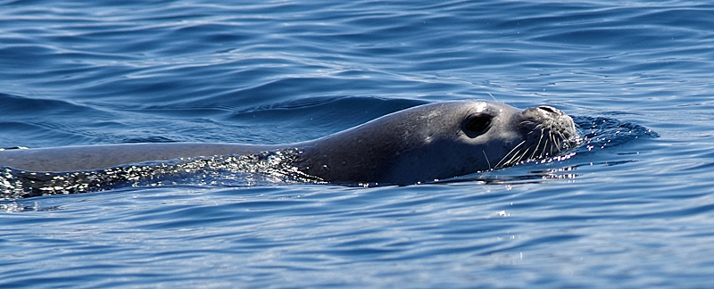

Kaum ein Land in Europa weist eine so artenreiche und vielfältige Fauna auf. Die vielen Nationalparks und die gute Lage begünstigen die Artenvielfalt. Deshalb kann keine allgemeine Aussage über die Fauna in Kroatien getroffen werden, allerdings gibt es sehr viele Säugetierarten und vor allem Vogelarten. Nämlich ist Kroatien die Heimat von 387 Vogelarten. In trockenen und steinigen Regionen sind oft Eidechsen, Schildkröten und Schlangen zu finden. Im Wasser auch Wale, Define und Robben.
